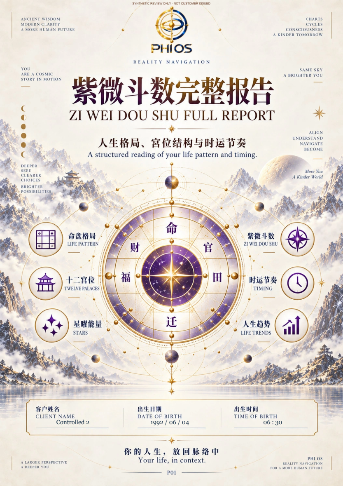

LOCAL TECHNICAL PROOFS COMPLETE · HUMAN / COMMERCIAL / CLOUD RELEASE BLOCKED · 2026-11-02
BaZi P10 保留 Owner 已通过的候选；不重开正文或 R2。紫微已批准中英文正文、15 张原生图和原始 R2 资产保持不变。
打开最终 Q87 出版候选 · 本轮交接 · 逐项准入状态 · 最小决定与下一步
最终参考：68 页／12 书签／9,807,509 bytes。SHA256 2dd6e0b3a4c6fba2a5ab7305afdb1cd2a1d4e9c72b56c63f8ca3677275d578b4。全部 68 页实际像素对照：仅 P47、P52、P58 变化；其余 65 页完全一致（全页 72dpi；下方目标页另附高分辨率核看）。新 Q87 / 逐页差异回执。旧参考及 SHA 保留，不沿用旧 PASS。
P47 为节点／星曜图例区域冲突；P52／P58 为图内 header 继承页眉绝对定位。修复真实 CSS 来源，重印整页替换内容／资源，没有遮罩隐藏底层元素。既有 Q87 图片避免再次 JPEG 编码。
| Gate | Status | 实际证据与边界 |
|---|---|---|
| Approved manuscript preserved | PASS_EXISTING_SOURCE_ACCEPT | Exact original accepted IR and manuscript retained. No rewrite or Provider. |
| Native calculation / Profile binding | PASS_LOCAL_NATIVE_AND_CONTRACT | Three encrypted Profiles → actual native base runtime; six cross-field denials. No three newly accepted personalized deep manuscripts. |
| R2 visual binding | PASS_CANDIDATE_VERSIONED_CONTRACT | Same registry / existing R2 renderer / 15 native diagrams; physical map and registry digests. Not deployed profile admission. |
| PDF publication fit | PASS_TARGETED_LOCAL_HUMAN_PENDING | P47/P52/P58 corrected at source. Whole 68-page 72dpi pixel diff: exactly three changed, 65 exact. Higher-resolution targeted before/after included. |
| Q87 final SHA / print quality | PASS_LOCAL_FINAL_BYTE_CHECK_HUMAN_PENDING | 9807509 bytes / 2dd6e0b3a4c6fba2a5ab7305afdb1cd2a1d4e9c72b56c63f8ca3677275d578b4; original Q87 payloads protected. Physical paper print NOT_RUN. |
| Watermark admission | PENDING_OWNER | Only SYNTHETIC review mark exists. Commercial policy not approved or applied. |
| Account delivery | PASS_NATIVE_ROUTE_LOCAL_SYNTHETIC_ONLY | 44574833 actual native Worker PDF bytes / 9444078e2e72df166535c19fc76ec18256838c9fd857c8fd6a499b72837a1b52; 10 access/integrity denials; true cold reopen. This is raw native rendition, not the independent final Q87 reference. |
| Exact final-file commercial handoff | BLOCKED_NOT_IMPLEMENTED_OR_ADMITTED | Final personalized sealing/navigation/Q87/watermark receipt must be handed to existing Artifact Store after approval. Local reference-only guard remains closed to commercial generation. |
| Cloud QA | NOT_RUN | No real D1/R2/private Cloud Worker/account authentication proof; no cloud writes. |
| Deployment admission | NOT_ADMITTED | No deploy / push / merge. Old v6 admission does not admit the R13 R2 renderer contract. |
| P8 admission | CLOSED | Registry remains false; real negative check denies. No customer issuance. |
Profile → IR → Worker → Account 合同 · 三组真实原生快照 · 逐字段与六项漂移拒绝 · 容量分页与二进制负例 · 原生 Account 路由十项负例 · 独立冷进程 · 归属及保护证据
原生 Worker QA PDF · 此文件 44,574,833 bytes，SHA 9444078e2e72df166535c19fc76ec18256838c9fd857c8fd6a499b72837a1b52，通过本地原生 Account 路由持久化和下载。它与上方最终 Q87 参考候选是不同文件；不宣称 Q87 正式客户发行。

Owner 最小决定：审阅三个目标页及封面字段候选；商业水印独立决定。随后才完成既有 Owner 的个性化最终文件封存／Q87 交接并另行申请非生产 Cloud QA。当前不请求全局发行 ACCEPT，不自动开 P8 或写正式客户 Artifact Store。
仅定向零费用 QA；无全量 npm check、真实收费、生产写入、commit/push/merge/deploy。只有独立本地合成对象写入；没有第二个 Master。